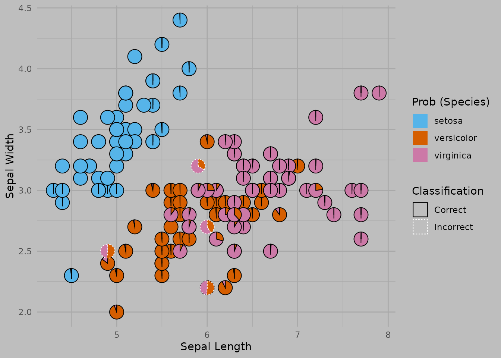

Multinomial Classification
Source:vignettes/multinomial-classification-example.Rmd
multinomial-classification-example.Rmd
This example presents the application of the PieGlyph package to show
the predicted probabilities of different classes in a multinomial
classification problem. This example could be useful for clustering
problems which gives probabilities, e.g. mclust using model
based clustering or ranger using random forests.
Load data
We are using iris dataset which gives the measurements of
the sepal length, sepal width, petal length and petal width for 50
flowers from each of Iris setosa, Iris versicolor, and Iris
virginica
head(iris)
#> Sepal.Length Sepal.Width Petal.Length Petal.Width Species
#> 1 5.1 3.5 1.4 0.2 setosa
#> 2 4.9 3.0 1.4 0.2 setosa
#> 3 4.7 3.2 1.3 0.2 setosa
#> 4 4.6 3.1 1.5 0.2 setosa
#> 5 5.0 3.6 1.4 0.2 setosa
#> 6 5.4 3.9 1.7 0.4 setosaClassification model
We use the random forest algorithm for classifying the samples into the three species according to the four measurements described above.
rf <- ranger(Species ~ Petal.Length + Petal.Width +
Sepal.Length + Sepal.Width,
data=iris, probability=TRUE)We get the predicted probabilities of each sample belonging to a particular species.
preds <- as.data.frame(predict(rf, iris)$predictions)
head(preds)
#> setosa versicolor virginica
#> 1 1.0000 0e+00 0
#> 2 0.9995 5e-04 0
#> 3 1.0000 0e+00 0
#> 4 1.0000 0e+00 0
#> 5 1.0000 0e+00 0
#> 6 1.0000 0e+00 0Combine the predicted probabilities with the original data for plotting
plot_data <- cbind(iris, preds)
head(plot_data)
#> Sepal.Length Sepal.Width Petal.Length Petal.Width Species setosa versicolor
#> 1 5.1 3.5 1.4 0.2 setosa 1.0000 0e+00
#> 2 4.9 3.0 1.4 0.2 setosa 0.9995 5e-04
#> 3 4.7 3.2 1.3 0.2 setosa 1.0000 0e+00
#> 4 4.6 3.1 1.5 0.2 setosa 1.0000 0e+00
#> 5 5.0 3.6 1.4 0.2 setosa 1.0000 0e+00
#> 6 5.4 3.9 1.7 0.4 setosa 1.0000 0e+00
#> virginica
#> 1 0
#> 2 0
#> 3 0
#> 4 0
#> 5 0
#> 6 0Add a column indicating whether the sample was classified correctly or not
plot_data <- plot_data %>%
# Do operations on a row basis
rowwise() %>%
# Select the species with the highest predicted probability as the classified species
mutate(Predicted = colnames(.)[5 + which.max(c(setosa, versicolor, virginica))]) %>%
# Compare whether the selected species is same as the original
mutate('Classification' = ifelse(Species == Predicted, 'Correct', 'Incorrect')) %>%
ungroup()Create plot
The plot shows a scatterplot of the sepal width and sepal length for the
samples in the iris dataset. The predicted probabilities of
belonging to a particular species for each sample are shown by the
pie-chart glyphs. The borders of the pie charts show whether or not the
sample was classified correctly.
ggplot(data=plot_data,
aes(x=Sepal.Length, y=Sepal.Width))+
# Pies-charts showing predicted probabilities of the different species
# Using the pie-border to highlight if the same was classified correctly
geom_pie_glyph(aes(linetype = Classification, colour = Classification),
slices = names(preds)) +
# Colours for sectors of the pie-chart
scale_fill_manual(values = c('#56B4E9', '#D55E00','#CC79A7'))+
# Labels for axes and legend
labs(y = 'Sepal Width', x = 'Sepal Length', fill = 'Prob (Species)')+
# Adjusting the borders colours and linetypes
scale_linetype_manual(values = c(1, 3))+
scale_colour_manual(values = c('black', 'white'))+
# Theme of the plot
theme_minimal()+
theme(panel.grid = element_line(colour = 'darkgrey'),
plot.background = element_rect(fill = 'grey', colour = NA))